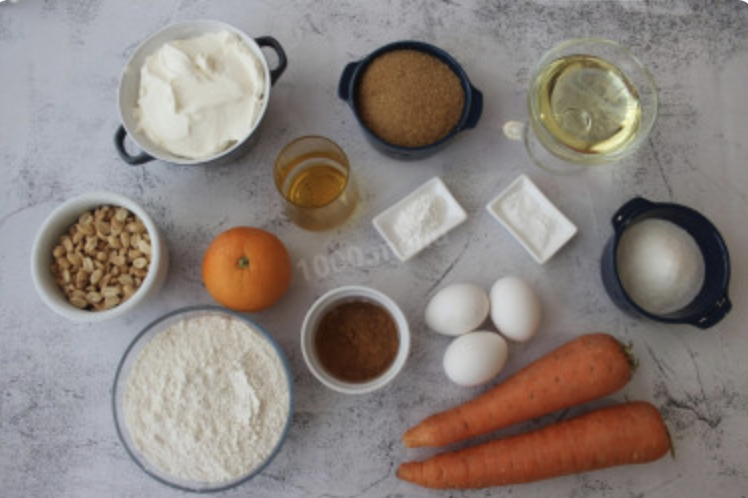
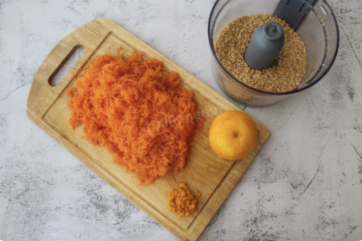
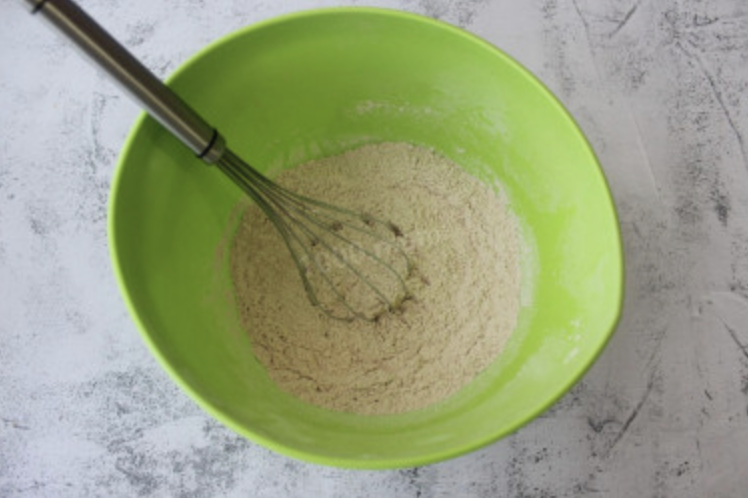
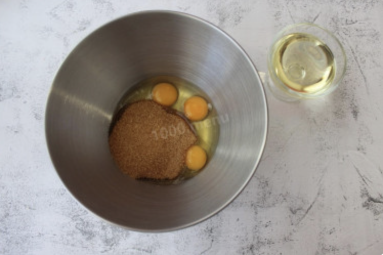
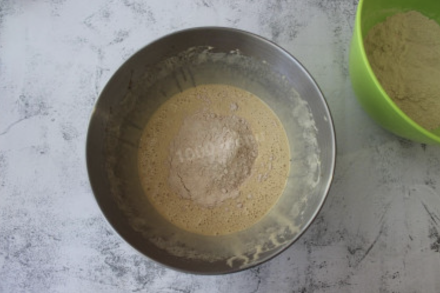
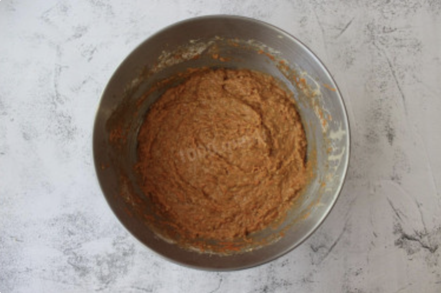
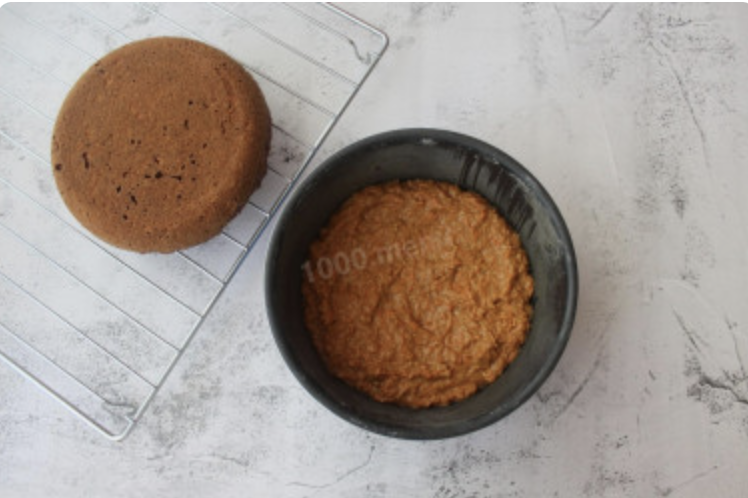
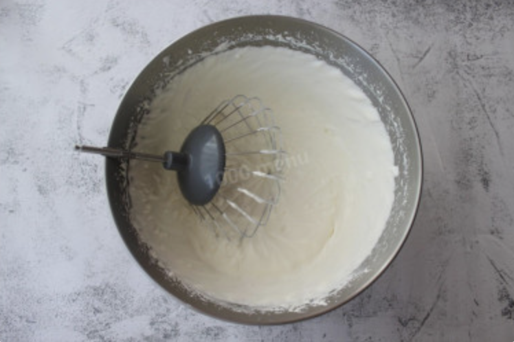
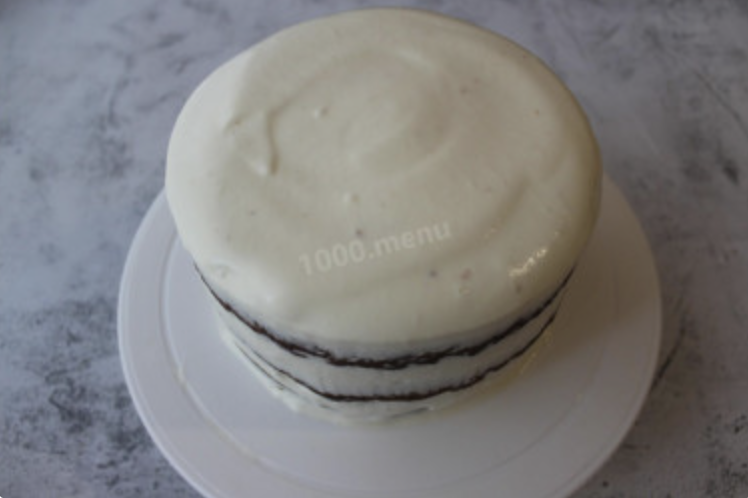

| # | Ingredient name | Amount |
|---|---|---|
| 1 | Carrot | 500gr |
| 2 | Orange | 1 |
| 3 | Sugar | 200gr |
| 4 | Flour | 330g |
| 5 | Baking powder | 1 tea spoon |
| 6 | Cinnamon | 1 table spoon |
| 7 | Oil | 150ml |
| 8 | Eggs | 3 |
| 9 | Walnuts | 150gr |
| 10 | Sour cream | 500gr |
| 11 | Sugar | 100gr |
| 12 | Butter | 5gr |
Prepare the ingredients.
Wipe and remove the zest from it, grating it on a fine grater. Wash the carrots, peel and grate them on a fine grater. Chop the nuts.
Sift flour into a clean container. Add baking powder, baking soda and cinnamon to the flour. Mix all dry ingredients with a whisk for 1 minute.
In a container for kneading dough, beat the eggs, add sugar and beat with a mixer for 3-4 minutes. During this time, the egg mass should increase in volume and become lighter. Then pour in the vegetable oil and whisk a little more.
In the egg mass, begin to introduce previously mixed dry ingredients in parts, mix thoroughly.
Add chopped nuts, grated carrots and orange zest to the dough, mix with a spatula or spoon. It will be very difficult to mix such a thick dough with a whisk, the resulting carrot juice should not be poured into the dough, since the dough should be thick. For a spicy flavor, add 2 tablespoons of orange juice and mix again.
Turn on the oven to preheat at 180oC. At this time, prepare a form with a diameter of 16 cm, using the "French shirt" method. Lubricate the mold with a very thin layer of butter, sprinkle with flour and shake, shake out the excess flour. This method will make it easy to remove the cakes from the mold, you just need to let the mold cool down a little and the cake itself will begin to shrink and move away from the mold. Before baking a new cake, it is necessary to prepare the mold again in the same way.
Calculate the mass of the resulting dough for one cake: put a bowl of dough on the scales and subtract the weight of the container from this figure and divide by 3. Pour the 1st part of the dough into the prepared mold and bake the cake for 25-30 minutes. Check readiness with a toothpick. Bake 2 more cakes in the same way. Spread the baked cakes to cool on the grill, this will allow the cakes to cool evenly, since the air from all sides will be evenly ventilated.
Calculate the mass of the resulting dough for one cake: put a bowl of dough on the scales and subtract the weight of the container from this figure and divide by 3. Pour the 1st part of the dough into the prepared mold and bake the cake for 25-30 minutes. Check readiness with a toothpick. Bake 2 more cakes in the same way. Spread the baked cakes to cool on the grill, this will allow the cakes to cool evenly, since the air from all sides will be evenly ventilated.
Prepare the cream. Whisk the greasy sour cream for 2 minutes. I have sour cream fat content of 30%, the amount of time for whipping cream is better adjusted according to the fat content of the selected sour cream. Then add honey and sugar, continue to beat for another 10-15 minutes. It is important not to overdo the sour cream, because then the buttermilk will start to leave, and the sour cream will turn into butter. Put the finished cream in the refrigerator until the cake is assembled.
